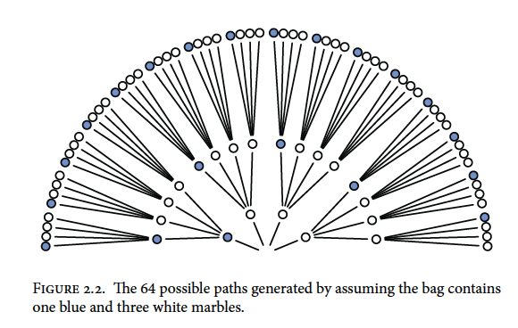
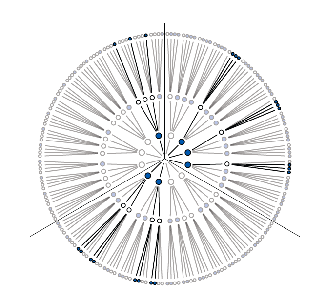
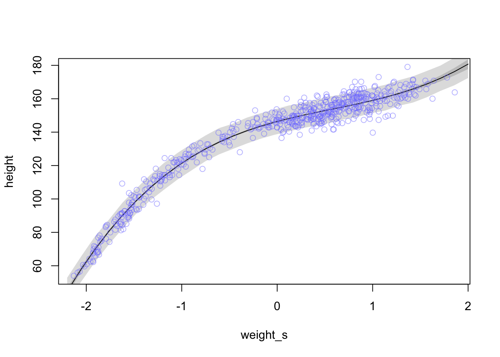

Chapter 2 Small worlds and large worlds
Every model has two parts: small world and large world. The small world is within the model itself and the large world is the broader world we want the model to be applied to. In the small world, everything is defined and there isn’t much room for pure surprises. The large world has more opportunities for unforeseen events and because the small world is an incomplete representation of the large world, mistakes are expected. The goal is to create small worlds (models) that approximate reality so that they perform well in the large world.
2.1 The garden of forking data
Bayesian inference is the counting and comparing of possibilities. At each point where a ‘decision’ may split the path, bayesian inference evaluates each path and eliminates the paths that are not congruent with the data fed into the model.
2.1.1 Counting possibilities
Marble Example
There is a bag of four marbles of two colours (blue and white). This means that there could be 5 possibilities (conjectures); 4:0 white, 3:1 white, 2:2 split, 3:1 blue, and 4:0 blue.
A sequence of three marbles is pulled from the bag, one at a time, and returned to the bag (repeated sampling)
We get blue, white, blue.
Considering a 3:1 white scenario, on the first draw you could get a blue marble or three white marble draws

Expanding out one more draw (layer) we can expect the same possibilities because the first marble is replaced before the second draw

Expanding one more time gives us the final garden of 64 possibilities (43; 4 marbles with 3 draws)

Now recall our draws were blue, white, blue so we can trim the paths that are not congruent with the draws

We can also trim other possibilities like all white marbles or all blue marbles because we drew both colours from the bag. Putting our 3:1 white, 2:2 split, and 3:1 blue possibilities together would look something like this

You can see that there are different numbers of unique paths to get our observed result
3:1 white has 3 paths
2:2 split has 8 paths
3:1 blue has 9 paths
We will call these counts our priors.
2.1.2 Combining other information
Suppose we make another marble draw and it is blue. We then count the ways each of our marble possibilities could create this new result
3:1 white has 1 path
2:2 split has 2 paths
3:1 blue has 3 paths
Mutiplying by the prior counts gives us:
3:1 white has (3x1) 3 paths
2:2 split has (8x2) 16 paths
3:1 blue has (9x3) 27 paths
and suggests that our 3:1 blue possibility is more plausible with the new information.
Note that prior data and new data don’t have to be of the same type
If we knew that the marble factory made the bags of marbles at fixed rates (i.e. there are 3x more 3:1 white bags as there are 3:1 blue bags and 2x as many 2:2 split bags than 3:1 blue bags) we could update our prior knowledge
3:1 white has 3 paths x 3 factory rate = 9
2:2 split has 16 paths x 2 factory rate = 32
3:1 blue has 27 paths x 1 factory rate = 27
Now the 2:2 split bag seems to be the most plausible outcome (by a small margin)
2.1.3 From counts to probability
To avoid observation counts from getting quickly out of hand (over a million possible sequences after 10 data points) we need to collapse the information in a way that is easy to manipulate with the data.
Continuing our marble example
The plausibility of 3:1 white after seeing blue, white, blue is proportional to the ways 3:1 white can produce blue, white, blue * prior plausibility of 3:1 white.
In other words if \(p\) is the proportion of blue marbles then in a 3:1 white bag \(p\) = 0.25 (1/4)
And if we call our data (blue, white, blue) \(D~new~\) we can write:
The plausibility of \(p\) after \(D~new~\) \(\propto\) ways \(p\) can produce \(D~new~\) \(\times\) prior plausibility of \(p\)
We then standardize the plausibility of \(p\) after \(D~new~\) by dividing by the sum of the products to make the sum of plausibility to equal 1
\[\begin{equation} \text{The plausibility of } p \text{ after } D~new~ = \frac{\text{ways } p \text{ can produce } D~new~ \times \text{prior plausibility of } p}{\text{sum of products}} \end{equation}\]
If you recall our first count of the paths to obtain our observations we had:
3:1 white has 3 paths
2:2 split has 8 paths
3:1 blue has 9 paths
To illustrate the standardization of plausibility in R:
ways <- c(3, 8, 9)
ways/sum(ways)## [1] 0.15 0.40 0.45We can now think of these plausibilities as probabilities that sum to 1
New terms:
Parameter : \(p\) or the conjectured proportion of blue marbles. (indexing ways to explain the data)
Likelihood : The relative number of ways that a parameter value (\(p\)) can produce the data
Prior probability : The prior plausibility of any \(p\) value
Posterior probability : The new, updated plausibility of and \(p\) value
2.2 Building a model
Globe example
You have a globe and want to know how much surface is covered in water. You throw it in the air multiple times and when you catch it, what lies under your right index finger is recorded. The first nine throws are:
W L W W W L W L W
with W meaning water and L meaning land. The ratio of water to land is 6:3 (2:1). This will be our data
Steps to design your model:
- Data story: Motivate the model by narrating how the data might arise
- Update: Educate your model by feeding it data
- Evaluate: All statistical models require supervision, leading to model revision
2.2.1 A data story
You can be descriptive in your data story by defining associations that can be used to predict outcomes. Or you can have a causal story where some events produce others. Typically casual stories are also descriptive.
A good place to start is restating the sampling process:
- The true proportion of water covering the globe is \(p\)
- A single toss of the globe has probability \(p\) of producing a water (W) observation. Land probability is \(1 - p\)
- Each toss is independent of the others
2.2.2 Bayesian updating
A Bayesian model must start with one set of plausibilities for each possible scenario or Prior plausibilities. The model then updates the plausibilities using the input of the data and creates the Postierior plausibilties. For the globe example, the plausibility for each \(p\) value is set to be the same.
So before the first draw, the model assumes an equal uniform plausibility for any proportion of water (\(p\)) shown as the dashed line below. After the first draw (W), the model updates its plausibility of water proportion to have a very unlikely chance that there is almost no water and a high chance there is a lot of water (solid line below) because there is no known land

For each additional data point (toss) we see the model adjust its plausibility expectations. After the second toss (L), the model adjusts the plausibility of \(p\) to be highest at 0.5 or 1/2 as we have seen a proportion of 0.5 in the data so far

As we add observations, W observations will shift the plausibility peak of \(p\) to the right and L observations will pull it back to the left

Note that as observations are added, the height of the peak increases as fewer values of \(p\) gain plausibility
2.2.3 Evaluate
To ensure that the model is behaving as it should to be applicable to the large world, it should be always be checked. The model’s certainty is not the same as accuracy. As you increase the amount of tosses of the globe the model will become more and more certain of the plausibility of a \(p\) value (a narrow and tall curve). This could be an artifact of the model and could look very different under another model. Also, be sure to supervise and critique your model’s work as it can’t supervise itself.
2.3 Components of the model
Recall that we have counted a few different things already
- The number of ways each conjecture (mix of marbles) could produce an observation
- The accumulated number of ways each conjecture could produce the entire data
- The initial plausibility of each conjectured cause of the data
Here are some components related to these things that will help us understand what is happening within the models we build
2.3.1 Variables
Variables are the things we want to infer. They can be proportions, rates, even the data itself. In the globe example we had three variables
- \(p\), the proportion of water, our target of inference
This value was ‘unobservable’ so it could be labled as a paramter
- Observed counts of water (W)
- Observed counts of land (L)
2.3.2 Definitions
We must define our variables and how they relate to each other.
2.3.2.1 Observed variables
To determine the plausibility of the data to give the target of inference (\(p\)), we must define a distribution function for each observed variable which we will call a likelihood.
For the globe example we are only concerned with W and L as they are the only events that can occur for each toss. We also need to make assumptions:
- Each toss (sample) is independent of the others
- The probability of getting W is the same for each sample (allowing re-sampling)
For instances that are either TRUE or FALSE (0 or 1) we can use something called the binomial distribution. (Also called the ‘coin tossing’ distribution). The probability of observing can be expressed as:
\(\text{Pr}(W, L|p) = \frac{(W + L)! }{W!L!} p^{W}(1 - p)^{L}\)
In words: The counts of ‘water’ (W) and ‘land’ (L) are distributed binomially with probability p of ‘water’ for each toss.
To calculate the likelihood in R you can use the dbinom function
dbinom(6, size = 9, prob = 0.5)## [1] 0.1640625Recall we had 6 W’s from 9 tosses. Here \(p\) is held at 0.5 but you can play around with this to see how the likelihood changes.
Hint:
plot(dbinom(6, size = 9, prob = seq(from = 0, to = 1, by = 0.1)))
2.3.2.2 Unobserved variables
Because we do not observe the \(p\) (probability of sampling water) directly, we would define it as a parameter. There are other frequent questions that models will try to answer with parameters such as:
- What is the differece between group A and group B?
- How strong is the association between group and outcome?
- Does the effect of the grouping vary with a covariate?
- How much variation is there among the groups?
Each parameter of your model must have its own distribution of plausibility that you provide the model before it runs. These are your priors. Flat priors are common (as in figure X above) but are hardly representative of real world observations. If you don’t have good prior information to help set your prior assumptions of your paramters, then you should try a variety of priors to see how it affects your model’s performance.
2.3.3 A model is born
Now we can write our model as:
\(W \text{ ~ } \text{Binomial}(N,p)\)
With the prior for \(p\) as:
\(p \text{ ~ } \text{Uniform}(0,1)\)
So we can say that the amount of water on the globe is a function with the binomial distribution where \(N = W + L\) and the probability of water (\(p\)) is a uniform distribution ranging from 0 to 1.
2.4 Maiking the model go
read up to PDF page 59 (grid approx)
###grid approx
#define grid
p_grid <- seq(from = 0, to = 1, length.out = 20)
#define prior
prior <- rep(1,20)
#compute likelihood at each value in the grid
likelihood <- dbinom(6 , size = 9, prob = p_grid)
#compute product of likelihood and prior
unstd.posterior <- likelihood * prior
#standardize posterior so it sums to 1
posterior <- unstd.posterior / sum(unstd.posterior)plot(p_grid, posterior, type = 'b',
xlab = "probability of water", ylab = "posterior probability")
mtext("20 points")
5 points (left side of figure 2.7)
#define grid
p_grid <- seq(from = 0, to = 1, length.out = 5)
#define prior
prior <- rep(1,5)
#compute likelihood at each value in the grid
likelihood <- dbinom(6 , size = 9, prob = p_grid)
#compute product of likelihood and prior
unstd.posterior <- likelihood * prior
#standardize posterior so it sums to 1
posterior <- unstd.posterior / sum(unstd.posterior)plot(p_grid, posterior, type = 'b',
xlab = "probability of water", ylab = "posterior probability")
mtext("5 points") 100 points
100 points
#define grid
p_grid <- seq(from = 0, to = 1, length.out = 100)
#define prior
prior <- rep(1,100)
#compute likelihood at each value in the grid
likelihood <- dbinom(6 , size = 9, prob = p_grid)
#compute product of likelihood and prior
unstd.posterior <- likelihood * prior
#standardize posterior so it sums to 1
posterior <- unstd.posterior / sum(unstd.posterior)plot(p_grid, posterior, type = 'b',
xlab = "probability of water", ylab = "posterior probability")
mtext("20 points")
1000 points
#define grid
p_grid <- seq(from = 0, to = 1, length.out = 1000)
#define prior
prior <- rep(1,1000)
#compute likelihood at each value in the grid
likelihood <- dbinom(6 , size = 9, prob = p_grid)
#compute product of likelihood and prior
unstd.posterior <- likelihood * prior
#standardize posterior so it sums to 1
posterior <- unstd.posterior / sum(unstd.posterior)plot(p_grid, posterior, type = 'b',
xlab = "probability of water", ylab = "posterior probability")
mtext("20 points")
Changing priors (recreating fig 2.6)
#define grid
p_grid <- seq(from = 0, to = 1, length.out = 20)
#define new priors
prior <- ifelse(p_grid < 0.5, 0, 1)
#compute likelihood at each value in the grid
likelihood <- dbinom(6 , size = 9, prob = p_grid)
#compute product of likelihood and prior
unstd.posterior <- likelihood * prior
#standardize posterior so it sums to 1
posterior <- unstd.posterior / sum(unstd.posterior)plot(p_grid, posterior, type = 'b',
xlab = "probability of water", ylab = "posterior probability")
mtext("20 points")
#define grid
p_grid <- seq(from = 0, to = 1, length.out = 20)
prior <- exp(-5*abs(p_grid - 0.5))
#compute likelihood at each value in the grid
likelihood <- dbinom(6 , size = 9, prob = p_grid)
#compute product of likelihood and prior
unstd.posterior <- likelihood * prior
#standardize posterior so it sums to 1
posterior <- unstd.posterior / sum(unstd.posterior)plot(p_grid, posterior, type = 'b',
xlab = "probability of water", ylab = "posterior probability")
mtext("20 points")2.4.1 Quadratic
Nine tosses (n = 9)
#library(rethinking)
#globe.qa <- quap(
# alist(
# W ~ dbinom(W+L, p) , #binomial likelihood
# p ~ dunif(0,1) #uniform prior
# ) ,
# data = list(W=6, L=3) )
#display the summary of the quadratic approximation
#precis(globe.qa)plot analytical vs. the quadratic approximation
#analytical calculation
W <- 6
L <- 3
curve( dbeta(x , W+1, L+1), from = 0, to = 1)
#quadratic calculation
curve( dnorm(x, 0.67, 0.16), lty = 2, add = TRUE)
compare 9 tosses to 18 and 36 (via Kurs, fig 2.8)
library(dplyr)##
## Attaching package: 'dplyr'## The following objects are masked from 'package:stats':
##
## filter, lag## The following objects are masked from 'package:base':
##
## intersect, setdiff, setequal, unionlibrary(ggplot2)
library(stringr)
n_grid <- 100
tibble(p_grid = seq(from = 0, to = 1, length.out = n_grid) %>% rep(., times = 3),
prior = 1,
w = rep(c(6, 12, 24), each = n_grid),
n = rep(c(9, 18, 36), each = n_grid),
m = .67,
s = rep(c(.16, .11, .08), each = n_grid)) %>%
mutate(likelihood = dbinom(w, size = n, prob = p_grid)) %>%
mutate(unstd_grid_posterior = likelihood * prior,
unstd_quad_posterior = dnorm(p_grid, m, s)) %>%
group_by(w) %>%
mutate(grid_posterior = unstd_grid_posterior / sum(unstd_grid_posterior),
quad_posterior = unstd_quad_posterior / sum(unstd_quad_posterior),
n = str_c("n = ", n)) %>%
mutate(n = factor(n, levels = c("n = 9", "n = 18", "n = 36"))) %>%
ggplot(aes(x = p_grid)) +
geom_line(aes(y = grid_posterior), color = "blue") +
geom_line(aes(y = quad_posterior),
color = "black") +
labs(x = "proportion water",
y = "density") +
theme(panel.grid = element_blank()) +
facet_wrap(~n, scales = "free")
2.4.2 MCMC
n_samples <- 1000
p <- rep(NA, n_samples)
p[1] <- 0.5
W <- 6
L <- 3
for(i in 2:n_samples){
p_new <- rnorm(1, p[i-1], 0.1)
if(p_new < 0) p_new <- abs(p_new)
if(p_new > 1) p_new <- 2 - p_new
q0 <- dbinom(W, W+L, p[i-1])
q1 <- dbinom(W, W+L, p_new)
p[i] <- ifelse(runif(1) < q1/q0, p_new, p[i-1])
}#dens(p, xlim=c(0,1))
d <- density(p)
plot(d)
curve(dbeta(x, W+1, L+1), lty = 2, add = TRUE)
library(brms)## Loading required package: Rcpp## Loading 'brms' package (version 2.16.3). Useful instructions
## can be found by typing help('brms'). A more detailed introduction
## to the package is available through vignette('brms_overview').##
## Attaching package: 'brms'## The following object is masked from 'package:stats':
##
## arglobe_qa_brms <-
brm(data = list(w = 24),
family = binomial(link = "identity"),
w | trials(36) ~ 1,
prior(beta(1, 1), class = Intercept),
iter = 4000, warmup = 1000,
control = list(adapt_delta = .9),
seed = 4)## Compiling Stan program...## Start sampling##
## SAMPLING FOR MODEL 'b6f53d595e95b8fac0022b935456f8a6' NOW (CHAIN 1).
## Chain 1:
## Chain 1: Gradient evaluation took 0 seconds
## Chain 1: 1000 transitions using 10 leapfrog steps per transition would take 0 seconds.
## Chain 1: Adjust your expectations accordingly!
## Chain 1:
## Chain 1:
## Chain 1: Iteration: 1 / 4000 [ 0%] (Warmup)
## Chain 1: Iteration: 400 / 4000 [ 10%] (Warmup)
## Chain 1: Iteration: 800 / 4000 [ 20%] (Warmup)
## Chain 1: Iteration: 1001 / 4000 [ 25%] (Sampling)
## Chain 1: Iteration: 1400 / 4000 [ 35%] (Sampling)
## Chain 1: Iteration: 1800 / 4000 [ 45%] (Sampling)
## Chain 1: Iteration: 2200 / 4000 [ 55%] (Sampling)
## Chain 1: Iteration: 2600 / 4000 [ 65%] (Sampling)
## Chain 1: Iteration: 3000 / 4000 [ 75%] (Sampling)
## Chain 1: Iteration: 3400 / 4000 [ 85%] (Sampling)
## Chain 1: Iteration: 3800 / 4000 [ 95%] (Sampling)
## Chain 1: Iteration: 4000 / 4000 [100%] (Sampling)
## Chain 1:
## Chain 1: Elapsed Time: 0.016 seconds (Warm-up)
## Chain 1: 0.045 seconds (Sampling)
## Chain 1: 0.061 seconds (Total)
## Chain 1:
##
## SAMPLING FOR MODEL 'b6f53d595e95b8fac0022b935456f8a6' NOW (CHAIN 2).
## Chain 2: Rejecting initial value:
## Chain 2: Error evaluating the log probability at the initial value.
## Chain 2: Exception: binomial_lpmf: Probability parameter[1] is -1.16817, but must be in the interval [0, 1] (in 'model28189036a7f_b6f53d595e95b8fac0022b935456f8a6' at line 22)
##
## Chain 2: Rejecting initial value:
## Chain 2: Error evaluating the log probability at the initial value.
## Chain 2: Exception: binomial_lpmf: Probability parameter[1] is 1.21464, but must be in the interval [0, 1] (in 'model28189036a7f_b6f53d595e95b8fac0022b935456f8a6' at line 22)
##
## Chain 2:
## Chain 2: Gradient evaluation took 0 seconds
## Chain 2: 1000 transitions using 10 leapfrog steps per transition would take 0 seconds.
## Chain 2: Adjust your expectations accordingly!
## Chain 2:
## Chain 2:
## Chain 2: Iteration: 1 / 4000 [ 0%] (Warmup)
## Chain 2: Iteration: 400 / 4000 [ 10%] (Warmup)
## Chain 2: Iteration: 800 / 4000 [ 20%] (Warmup)
## Chain 2: Iteration: 1001 / 4000 [ 25%] (Sampling)
## Chain 2: Iteration: 1400 / 4000 [ 35%] (Sampling)
## Chain 2: Iteration: 1800 / 4000 [ 45%] (Sampling)
## Chain 2: Iteration: 2200 / 4000 [ 55%] (Sampling)
## Chain 2: Iteration: 2600 / 4000 [ 65%] (Sampling)
## Chain 2: Iteration: 3000 / 4000 [ 75%] (Sampling)
## Chain 2: Iteration: 3400 / 4000 [ 85%] (Sampling)
## Chain 2: Iteration: 3800 / 4000 [ 95%] (Sampling)
## Chain 2: Iteration: 4000 / 4000 [100%] (Sampling)
## Chain 2:
## Chain 2: Elapsed Time: 0.016 seconds (Warm-up)
## Chain 2: 0.042 seconds (Sampling)
## Chain 2: 0.058 seconds (Total)
## Chain 2:
##
## SAMPLING FOR MODEL 'b6f53d595e95b8fac0022b935456f8a6' NOW (CHAIN 3).
## Chain 3: Rejecting initial value:
## Chain 3: Error evaluating the log probability at the initial value.
## Chain 3: Exception: binomial_lpmf: Probability parameter[1] is 1.3474, but must be in the interval [0, 1] (in 'model28189036a7f_b6f53d595e95b8fac0022b935456f8a6' at line 22)
##
## Chain 3: Rejecting initial value:
## Chain 3: Error evaluating the log probability at the initial value.
## Chain 3: Exception: binomial_lpmf: Probability parameter[1] is -0.920633, but must be in the interval [0, 1] (in 'model28189036a7f_b6f53d595e95b8fac0022b935456f8a6' at line 22)
##
## Chain 3: Rejecting initial value:
## Chain 3: Error evaluating the log probability at the initial value.
## Chain 3: Exception: binomial_lpmf: Probability parameter[1] is 1.24986, but must be in the interval [0, 1] (in 'model28189036a7f_b6f53d595e95b8fac0022b935456f8a6' at line 22)
##
## Chain 3:
## Chain 3: Gradient evaluation took 0 seconds
## Chain 3: 1000 transitions using 10 leapfrog steps per transition would take 0 seconds.
## Chain 3: Adjust your expectations accordingly!
## Chain 3:
## Chain 3:
## Chain 3: Iteration: 1 / 4000 [ 0%] (Warmup)
## Chain 3: Iteration: 400 / 4000 [ 10%] (Warmup)
## Chain 3: Iteration: 800 / 4000 [ 20%] (Warmup)
## Chain 3: Iteration: 1001 / 4000 [ 25%] (Sampling)
## Chain 3: Iteration: 1400 / 4000 [ 35%] (Sampling)
## Chain 3: Iteration: 1800 / 4000 [ 45%] (Sampling)
## Chain 3: Iteration: 2200 / 4000 [ 55%] (Sampling)
## Chain 3: Iteration: 2600 / 4000 [ 65%] (Sampling)
## Chain 3: Iteration: 3000 / 4000 [ 75%] (Sampling)
## Chain 3: Iteration: 3400 / 4000 [ 85%] (Sampling)
## Chain 3: Iteration: 3800 / 4000 [ 95%] (Sampling)
## Chain 3: Iteration: 4000 / 4000 [100%] (Sampling)
## Chain 3:
## Chain 3: Elapsed Time: 0.015 seconds (Warm-up)
## Chain 3: 0.048 seconds (Sampling)
## Chain 3: 0.063 seconds (Total)
## Chain 3:
##
## SAMPLING FOR MODEL 'b6f53d595e95b8fac0022b935456f8a6' NOW (CHAIN 4).
## Chain 4:
## Chain 4: Gradient evaluation took 0 seconds
## Chain 4: 1000 transitions using 10 leapfrog steps per transition would take 0 seconds.
## Chain 4: Adjust your expectations accordingly!
## Chain 4:
## Chain 4:
## Chain 4: Iteration: 1 / 4000 [ 0%] (Warmup)
## Chain 4: Iteration: 400 / 4000 [ 10%] (Warmup)
## Chain 4: Iteration: 800 / 4000 [ 20%] (Warmup)
## Chain 4: Iteration: 1001 / 4000 [ 25%] (Sampling)
## Chain 4: Iteration: 1400 / 4000 [ 35%] (Sampling)
## Chain 4: Iteration: 1800 / 4000 [ 45%] (Sampling)
## Chain 4: Iteration: 2200 / 4000 [ 55%] (Sampling)
## Chain 4: Iteration: 2600 / 4000 [ 65%] (Sampling)
## Chain 4: Iteration: 3000 / 4000 [ 75%] (Sampling)
## Chain 4: Iteration: 3400 / 4000 [ 85%] (Sampling)
## Chain 4: Iteration: 3800 / 4000 [ 95%] (Sampling)
## Chain 4: Iteration: 4000 / 4000 [100%] (Sampling)
## Chain 4:
## Chain 4: Elapsed Time: 0.016 seconds (Warm-up)
## Chain 4: 0.039 seconds (Sampling)
## Chain 4: 0.055 seconds (Total)
## Chain 4:print(globe_qa_brms)## Family: binomial
## Links: mu = identity
## Formula: w | trials(36) ~ 1
## Data: list(w = 24) (Number of observations: 1)
## Draws: 4 chains, each with iter = 4000; warmup = 1000; thin = 1;
## total post-warmup draws = 12000
##
## Population-Level Effects:
## Estimate Est.Error l-95% CI u-95% CI Rhat Bulk_ESS Tail_ESS
## Intercept 0.66 0.08 0.50 0.80 1.00 3569 4105
##
## Draws were sampled using sampling(NUTS). For each parameter, Bulk_ESS
## and Tail_ESS are effective sample size measures, and Rhat is the potential
## scale reduction factor on split chains (at convergence, Rhat = 1).posterior_samples(globe_qa_brms) %>%
mutate(n = "n = 36") %>%
ggplot(aes(x = b_Intercept)) +
geom_density(fill = "black") +
labs(x = "proportion water") +
xlim(0, 1) +
theme(panel.grid = element_blank()) +
facet_wrap(~n)## Warning: Method 'posterior_samples' is deprecated. Please see ?as_draws for
## recommended alternatives.## Select practice questions
2M1. Compute and plot grid approximations for the following:
- W, W, W
#define grid
p_grid <- seq(from = 0, to = 1, length.out = 20)
#define prior
prior <- rep(1,20)
#compute likelihood at each value in the grid
likelihood <- dbinom(3 , size = 3, prob = p_grid)
#compute product of likelihood and prior
unstd.posterior <- likelihood * prior
#standardize posterior so it sums to 1
posterior <- unstd.posterior / sum(unstd.posterior)plot(p_grid, posterior, type = 'b',
xlab = "probability of water", ylab = "posterior probability")
mtext("20 points")2. W, W, W, L
#define grid
p_grid <- seq(from = 0, to = 1, length.out = 20)
#define prior
prior <- rep(1,20)
#compute likelihood at each value in the grid
likelihood <- dbinom(3 , size = 4, prob = p_grid)
#compute product of likelihood and prior
unstd.posterior <- likelihood * prior
#standardize posterior so it sums to 1
posterior <- unstd.posterior / sum(unstd.posterior)plot(p_grid, posterior, type = 'b',
xlab = "probability of water", ylab = "posterior probability")
mtext("20 points")- L, W, W, L, W, W, W
#define grid
p_grid <- seq(from = 0, to = 1, length.out = 20)
#define prior
prior <- rep(1,20)
#compute likelihood at each value in the grid
likelihood <- dbinom(5 , size = 7, prob = p_grid)
#compute product of likelihood and prior
unstd.posterior <- likelihood * prior
#standardize posterior so it sums to 1
posterior <- unstd.posterior / sum(unstd.posterior)plot(p_grid, posterior, type = 'b',
xlab = "probability of water", ylab = "posterior probability")
mtext("20 points")2M2. Compute the above again but with priors that change from 0 when p<0.5 to a constant when p>0.5.
- W, W, W
#define grid
p_grid <- seq(from = 0, to = 1, length.out = 20)
#define prior
prior <- ifelse(p_grid < 0.5, 0, 3)
#compute likelihood at each value in the grid
likelihood <- dbinom(3 , size = 3, prob = p_grid)
#compute product of likelihood and prior
unstd.posterior <- likelihood * prior
#standardize posterior so it sums to 1
posterior <- unstd.posterior / sum(unstd.posterior)plot(p_grid, posterior, type = 'b',
xlab = "probability of water", ylab = "posterior probability")
mtext("20 points")2. W, W, W, L
#define grid
p_grid <- seq(from = 0, to = 1, length.out = 20)
#define prior
prior <- ifelse(p_grid < 0.5, 0, 3)
#compute likelihood at each value in the grid
likelihood <- dbinom(3 , size = 4, prob = p_grid)
#compute product of likelihood and prior
unstd.posterior <- likelihood * prior
#standardize posterior so it sums to 1
posterior <- unstd.posterior / sum(unstd.posterior)plot(p_grid, posterior, type = 'b',
xlab = "probability of water", ylab = "posterior probability")
mtext("20 points")- L, W, W, L, W, W, W
#define grid
p_grid <- seq(from = 0, to = 1, length.out = 20)
#define prior
prior <- ifelse(p_grid < 0.5, 0, 3)
#compute likelihood at each value in the grid
likelihood <- dbinom(5 , size = 7, prob = p_grid)
#compute product of likelihood and prior
unstd.posterior <- likelihood * prior
#standardize posterior so it sums to 1
posterior <- unstd.posterior / sum(unstd.posterior)plot(p_grid, posterior, type = 'b',
xlab = "probability of water", ylab = "posterior probability")
mtext("20 points")2M4. Three cards have two sides that can be black or white. one card is B/B, one is B/W, and one is W/W. They are placed in a bag and shuffled with one drawn and placed on the table black side up. Show the probability of the other side of the card being black.
# p = probability of black (initial 6 sides; 3W, 3B; p = 0.5)
# W/W = 0 paths to observed black; p = 0
# B/W = 1 paths to observed black; p = 1/2
# B/B = 1 paths to observed black; p = 1
# W/W = 0 x 0 = 0
# B/W = 1 x 1/2 = 1/2
# B/B = 1 x 1 = 1
ways <- c(0 ,0.5, 1)
ways/sum(ways)## [1] 0.0000000 0.3333333 0.66666672M5. A fourth card is added to the example above and it is B/B. Calculate the new probability of the other side of the drawn card being black.
# p = 5/8 (eight card sides, 3 W, 5 B)
# W/W = 0 paths to observed black; p = 0
# B/W = 1 path to observed black; p = 1/2
# B/B = 1 path to observed black; p = 1
# B/B = 1 path to observed black; p = 1
# W/W = 0 x 0 = 0
# B/W = 1 x 1/2 = 1/2
# B/B = 1 x 1 = 1
# B/B = 1 x 1 = 1 ; add two black cards together (2)
ways <- c(0 ,0.5, 2)
ways/sum(ways)## [1] 0.0 0.2 0.8